1080E EVAPORATION CONTROL SYSTEM
- Path
- Descriptions > 10 ENGINE > 1080 EMISSION CONTROL SYSTEM > 1080E EVAPORATION CONTROL SYSTEM
- Kind
- system description
- Applies to
- engines: 1.2 8v, 1.4 8v, 1.6 16v; all production periods
- Interactive page
- https://sloeber94.github.io/elrnDB-fDbl/en/#/2582289
Applies to: engines: 1.2 8v; all production periods
The evaporation control system consists of:
- fuel tank
- vapour separators,
- two float valves,
- a two-way ventilation valve inside the fuel tank filler cap,
- an active carbon filter with a filter flushing solenoid controlled by the IAW 59F engine control unit
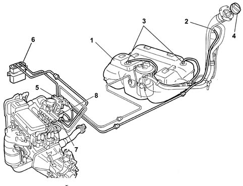
1, Fuel tank
2, Vapour separator with multifunction valve
3, Float valve
4, Plug with pressure relief valve
5, Engine control unit
6, Active carbon filter
7, Carbon filter flushing solenoid
8, Intake manifold
The vapours coming from the tank through the two float valves (3) are sent to the separator (2).
The vapours condensed in the separator (2) fall back into the fuel tank.
Uncondensed vapours are sent through a multi-purpose valve in the separator (2) and the pipe to the canister (6), where they are absorbed and stored by the activated charcoal in the filter.
Vapours are conveyed to the engine intake duct through solenoid (7) controlled by the engine control unit.
FLOAT VALVE
This type of valve is used for carrying out the following functions:
- prevent liquid fuel emerging from the tank in the case of roll-over,
- allow fuel vapours from the tank to be vented to the separator and activated charcoal filter;
- allow tank ventilation if there is a vacuum inside.
The float valve consists of a body (1) and a float/needle valve (2).
Valve operation may be summarised as follows; depending on the level to which the fuel tank is filled.
MAXIMUM TANK LEVEL
If the tank is full, float (2) blocks port (3) preventing the liquid fuel from reaching the separator.
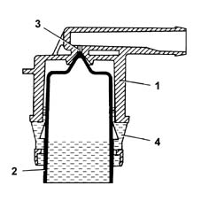
INTERMEDIATE TANK LEVEL
If the level of the fuel in the tank decreases, the float (2) descends and rests via its side tabs (4) on the slits in the valve body (1) to open the port (3). The gas reaches the port through the ring section between the float (2) and the inner seat of valve body (1).
This allows the fuel vapours to escape from the tank and reach the separator.
The tank can be ventilated through the same circuit when the pressure inside is less than the pressure outside.
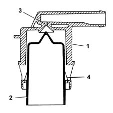
SEAL IN THE EVENT OF ROLL-OVER
if the vehicle rolls over, however full the tank is, float (2) presses down on hole (3) under its own weight and that of the fuel to prevent a dangerous outflow of fuel to the active carbon filter and the consequent risk of the vehicle catching fire.
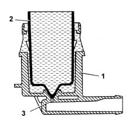
FUEL VAPOUR FILTER (CANISTER)
Fitted in the front right wheelarch, this consists of an activated-charcoal filter element which absorbs the fuel vapours coming from the separator.
A one-way valve (3) allows the entry of external (scavenging) air which comes into contact with the carbon granules, removing the petrol vapours and directing them through the outlet (1) to the inlet manifold when the fuel vapour solenoid valve is opened by the engine control unit.
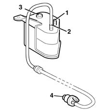
1, From the multifunction valve
2, To the inlet manifold
3, One-way scrubbing valve
4, Fuel vapour solenoid valve
ACTIVE CARBON FILTER SCAVENGING SOLENOID
This is fitted directly to the inlet manifold, and is controlled by the fuel engine control unit.
The function of the solenoid is to allow fuel vapours stored in the engine intake canister through to the engine intake.
If there is no supply the solenoid valve is closed to prevent the fuel vapours from reaching the intake manifold.
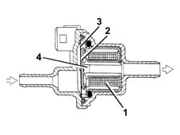
ACTIVE CARBON FILTER SCAVENGING SOLENOID
When the engine control unit controls the fuel vapour solenoid, solenoid (1) is excited and attracts plunger (2), which overcomes the load of laminar spring (2) to bring the canister into communication with the engine intake manifold.
MULTI-PURPOSE VALVE
The multi-purpose valve has the following functions:
- to prevent excess pressure in the tank
- to prevent a vacuum in the tank
- to prevent fuel emerging in the case of roll-over
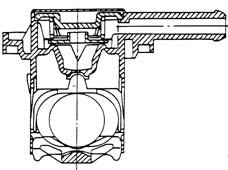
TANK OVER-PRESSURE
The tank is maintained at a pressure of 30-45 mbar by means of a fluorosilicone rubber valve, which rests on a sealing edge.
The valve is supported by a stainless steel plate and counteracted by a spring.
When the pressure in the tank exceeds the specified value, it overcomes the resistance of the spring and the valve is able to rise, allowing vapours to flow out to the canister. The valve closes again when the pressure falls back to within tank pressurisation limits.
TANK VACUUM
Under particular driving conditions, a vacuum could be created in the tank because of:
- temperature changes
- fuel consumption.
Under the above conditions, the valve makes up pressure in the fuel tank by adding extra air.
A fault in this function could cause the engine to miss or stall, because of difficulties in supplying the fuel pump.
This function is carried out by the 'goose beak' valve formed directly out of the fluorosilicone rubber.
SEAL IN THE EVENT OF ROLL-OVER
If the vehicle should roll over or tilt to a great extent, the multifunction valve acts to contain the emergence of fuel from the tank.
During normal driving of the vehicle (bends, acceleration, braking, etc.), the fuel slops around and may spill into the canister. The high sensitivity of the multifunction valve prevents such spillages.
Valve closure angle is about 33°.
SAFETY AND VENTILATION VALVE
This valve is built into the fuel filler cap. Its operation is dependent upon pressure in the fuel tank and is as follows:
- – (safety function) discharges excessive pressure which forms inside the tank; the pressure acts on the plate (2) and, overcoming the load of the spring (1), allows excess vapours to be discharged outside (ventilation function).
- It allows external air to flow into the tank when an excessive vacuum is created in the tank, following the consumption of fuel. In this case the vacuum overcomes the load of spring (4) to move valve (3) and allow air to be taken into the fuel tank.
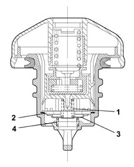
Applies to: engines: 1.6 16v; all production periods
CONSTRUCTION FEATURES
The petrol vapour recovery system includes the devices designed to keep down the level of harmful emissions in the fuel.
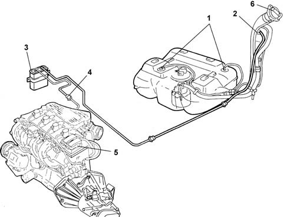
1, Float valve
2, Multi-purpose valve
3, Canister
4, Vapour cut out solenoid valve
5, Engine control unit
6, Safety and ventilation valve
OPERATING
The vapours coming from the tank through the two multi-purpose valves (1) are sent to the separator (2).
Uncondensed vapours are sent through the multi-purpose valve (3) and the pipe to the canister (4), where they are absorbed and stored by the activated charcoal.
The vapours flow to the inlet manifold through the solenoid valve (5) operated by the injection control unit.
CONSTRUCTION features
These valves are used for carrying out the following functions:
- preventing the escape of liquid fuel in the case of an accident where the vehicle overturns;
- allowing the breathing of fuel vapours from the tank to the separator and therefore to the activated charcoal filter;
- allow tank ventilation if there is a vacuum inside.
This valve consists of a body (1) and a float/needle valve (2).
Operation
The operation of the valve can be summarized in the following cases in relation to how full the fuel tank is.
TANK FULL
If the tank is full, float (2) blocks port (3) preventing the liquid fuel from reaching the separator.
INTERMEDIATE FUEL LEVEL
If the level of the fuel in the tank decreases, the float (2) descends and rests via the side tabs (4) on the slits in the valve body (1) opening the port (3), which can be reached by the gases through the ring section between the float (2) and the valve body (1) inner seat. This allows the fuel vaopurs to escape from the tank and reach the separator and the activated charcoal filter, or through the same circuit to ventilate the tank when the pressure inside is below the pressure outside.
SEAL IN THE EVENT OF ROLL-OVER
If the vehicle overturns, irrespective of how full the tank is, the weight of float (2) and the weight of the fuel on the port (3), prevents the dangerous flow of fuel to the activated charcoal filter and the consequent risk of the vehicle catching fire.
CONSTRUCTION FEATURES
Mounted in the front right wheelarch, this consists of an activated-charcoal filter element which absorbs the fuel vapours coming from the separator.
OPERATING
The petrol vapours coming from the tank enter the canister via the intake (1).
A one-way valve (3) allows the entry of external (scavenging) air which comes into contact with the carbon granules, removing the petrol vapours and directing them through the outlet (2) to the inlet manifold when the fuel vapour solenoid valve is opened by the engine control unit.
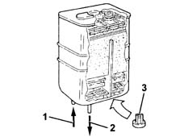
CONSTRUCTION FEATURES
It is fitted at the rear of the intake manifold on the timing side and is operated by the injection control unit.
The function of the solenoid is to allow fuel vapours stored in the engine intake canister through to the engine intake.
If there is no supply the solenoid valve is in the closed position, preventing the fuel vapours from enriching the mixture too much.
OPERATING
The solenoid valve is operated by the control unit according to a specific strategy ()
When the internal electro-magnet is energized, it opens the valve placing the active charcoal filter in contact with the air intake manifold.
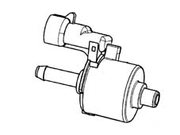
MULTI-PURPOSE VALVE
The valve functions are:
- pressurizing the tank
- retention
- seal in the event of roll-over.
PRESSURIZING THE TANK
The tank is maintained at a pressure of 30-45 mbar by means of a fluorosilicone rubber valve, which rests on a sealing edge.
The valve is supported by a stainless steel plate and counteracted by a spring.
When the pressure in the tank exceeds the specified value, it overcomes the resistance of the spring and the valve is able to rise, allowing vapours to flow to the canister.
When the pressure returns to the correct limits, the valve closes again.
RETENTION
Under particular driving conditions, a vacuum could be created in the tank because of:
- temperature changes
- fuel consumption
In this case, the valve's function is to restore the pressure of the tank by allowing air in.
A fault in this function could cause the engine to miss or stall, because of difficulties in supplying the fuel pump.
This function is carried out by the 'goose beak' valve formed directly out of the fluorosilicone rubber.
SEAL IN THE EVENT OF ROLL-OVER
The roll-over function prevents fuel from leaking from the tank if the vehicle overturns or is on a very steep slope.
During normal driving of the vehicle (bends, acceleration, braking, etc.), the fuel is shaken up and may spill into the canister.
The car's high roll-over sensitivity prevents this spillage.
The roll-over closure angle is less than 33°.
CONSTRUCTION FEATURES
This valve is built into the fuel filler cap, and it carries out the following functions, depending on the pressure present in the tank:
- it discharges to the outside any surplus pressure which is created inside the tank (safety function); the pressure acts on the plate (2) and, overcoming the load of the spring (1), allows the surplus vapours to be discharged to the outside.
- it allows external air to flow into the tank when an excessive vacuum is created in the tank, following the consumption of fuel (ventilation function). In this case, when the pressure exceeds the load of the spring (4), it moves the valve (3), allowing air to enter.
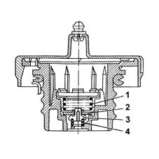
Applies to: engines: 1.6 16v; all production periods; only with equipment: BIPOWER
The petrol vapour recovery system includes the devices designed to keep down the level of harmful emissions in the fuel.
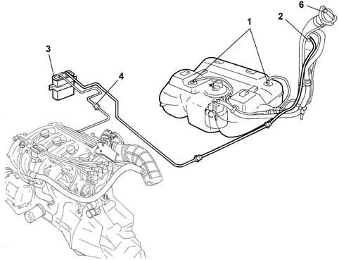
1, Float valve
2, Multi-purpose valve
3, Canister
4, Vapour cut out solenoid valve
5, Engine control unit
6, Safety and ventilation valve
OPERATION
The vapours coming from the tank through the two multi-purpose valves (1) are sent to the separator (2).
Uncondensed vapours are sent through the multi-purpose valve (3) and the pipe to the canister (4), where they are absorbed and stored by the activated charcoal.
The vapours flow to the inlet manifold through the solenoid valve (5) operated by the injection control unit.
CONSTRUCTION FEATURES
These valves are used for carrying out the following functions:
- preventing the escape of liquid fuel in the case of an accident where the vehicle overturns;
- allowing the breathing of fuel vapours from the tank to the separator and therefore to the activated charcoal filter;
- allow tank ventilation if there is a vacuum inside.
This valve consists of a body (1) and a float/needle valve (2).
Operation
The operation of the valve can be summarized in the following cases in relation to how full the fuel tank is.
TANK FULL
If the tank is full, float (2) blocks port (3) preventing the liquid fuel from reaching the separator.
INTERMEDIATE FUEL LEVEL
If the level of the fuel in the tank decreases, the float (2) descends and rests via the side tabs (4) on the slits in the valve body (1) opening the port (3), which can be reached by the gases through the ring section between the float (2) and the valve body (1) inner seat. This allows the fuel vapours to escape from the tank and reach the separator and the activated charcoal filter, or through the same circuit to ventilate the tank when the pressure inside is below the pressure outside.
SEAL IN THE EVENT OF ROLL-OVER
If the vehicle overturns, irrespective of how full the tank is, the weight of the float (2) and the weight of the fuel on the port (3), prevents the dangerous flow of fuel to the activated charcoal filter and the consequent risk of the vehicle catching fire.
CONSTRUCTION FEATURES
Mounted in the front right wheelarch, this consists of an activated-charcoal filter element which absorbs the fuel vapours coming from the separator.
OPERATION
The petrol vapours coming from the tank enter the canister via the intake (1).
A one-way valve (3) allows the entry of external (scavenging) air which comes into contact with the carbon granules, removing the petrol vapours and directing them through the outlet (2) to the inlet manifold when the fuel vapour solenoid valve is opened by the engine control unit.
CONSTRUCTION FEATURES
It is fitted at the rear of the intake manifold on the timing side and is operated by the injection control unit.
The function of the solenoid is to allow fuel vapours stored in the engine intake canister through to the engine intake.
If there is no supply the solenoid valve is in the closed position, preventing the fuel vapours from enriching the mixture too much.
OPERATION
The solenoid valve is operated by the control unit according to a specific strategy ()
When the internal electro-magnet is energized, it opens the valve placing the active charcoal filter in contact with the air intake manifold.
MULTI-PURPOSE VALVE
The valve functions are:
- pressurizing the tank
- retention
- seal in the event of roll-over.
PRESSURIZING THE TANK
The tank is maintained at a pressure of 30-45 mbar by means of a fluorosilicone rubber valve, which rests on a sealing edge.
The valve is supported by a stainless steel plate and counteracted by a spring.
When the pressure in the tank exceeds the specified value, it overcomes the resistance of the spring and the valve is able to rise, allowing vapours to flow to the canister.
When the pressure returns to the correct limits, the valve closes again.
RETENTION
Under particular driving conditions, a vacuum could be created in the tank because of:
- temperature changes
- fuel consumption
In this case, the valve's function is to restore the pressure of the tank by allowing air in.
A fault in this function could cause the engine to miss or stall, because of difficulties in supplying the fuel pump.
This function is carried out by the 'goose beak' valve formed directly out of the fluorosilicone rubber.
SEAL IN THE EVENT OF ROLL-OVER
The roll-over function prevents fuel from leaking from the tank if the vehicle overturns or is on a very steep slope.
During normal driving of the vehicle (bends, acceleration, braking, etc.), the fuel is shaken up and may spill into the canister.
The car's high roll-over sensitivity prevents this spillage.
The roll-over closure angle is less than 33°.
CONSTRUCTION FEATURES
This valve is built into the fuel filler cap, and it carries out the following functions, depending on the pressure present in the tank:
- it discharges to the outside any surplus pressure which is created inside the tank (safety function); the pressure acts on the plate (2) and, overcoming the load of the spring (1), allows the surplus vapours to be discharged to the outside.
- it allows external air to flow into the tank when an excessive vacuum is created in the tank, following the consumption of fuel (ventilation function). In this case, when the pressure exceeds the load of the spring (4), it moves the valve (3), allowing air to enter.
Applies to: engines: 1.4 8v; all production periods
SPECIFICATIONS
The evaporation control system is designed to prevent the fuel vapours, made up of the lightest parts of hydrocarbons that basically form in the tank, from being released into the atmosphere.
COMPOSITION
The system comprises a tank, a float valve, a two-way ventilation valve inside the fuel filler cap, a carbon filter and a carbon filter scavenging solenoid valve operated by the control unit.
OPERATION
The system works at high outside temperatures when the temperature of the fuel increases and as a result the tendency to evaporation also increases: in this situation the pressure inside the tank increases.
In particular, even with the tank full, the float valve remains open as it is located higher than the breather pipe and it consequently always allows the fuel vapours to reach the active charcoal filter thereby preventing fuel from escaping.
The fuel vapours reach the active charcoal filter when the pressure inside the tank causes the opening of the ventilation valve. This valve also allows an intake of air into the tank via the active charcoal filter if it is necessary following a decrease in the fuel level.
When the engine is running, the control unit controls the active charcoal filter scavenging solenoid valve which allows the intake of vapours by the engine and the consequent scavenging of the active charcoal filter.
If, as a result of a malfunction in one of the components, the pressure inside the tank increases to dangerous levels, the safety valve located in the fuel filler cap allows the pressure to be discharged outwards. If necessary, this valve can open in the opposite direction to ventilate the tank and prevent the vacuum reaching level that are too high.
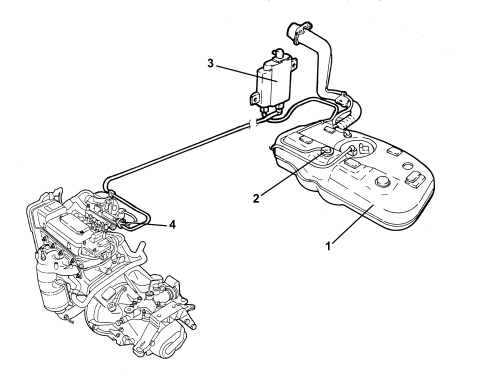
1. Fuel tank
2. Float valve
3. Activated charcoal filter
4. Active charcoal filter scrubbing solenoid
EVAPORATION CONTROL SYSTEM COMPONENTS
Float valve
This valve is used to perform the following functions:
- prevent the outflow of liquid fuel in the case of accidents where the vehicle overturns;
- allow the breathing of fuel vapours from the tank to the separator and to the active charcoal filter;
- allow tank ventilation if a vacuum builds up inside.
This valve consists of a casing (1) and float/needle valve (2).
Valve operation may be illustrated by the following scenarios that occur with different levels of fuel in the tank.
Full tank
If the tank is full, the float (2) blocks the opening (3) to prevent liquid fuel from reaching the active charcoal filter.
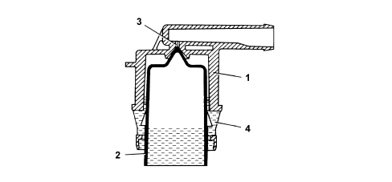
Medium fuel level
If the level of the fuel in the tank decreases, the float (2) descends and rests by means of the side tabs (4) on the slots in the valve casing (1) opening the port (3) that can be reached by the gases via the ring section between the float (2) and the valve body inner seat (1). This allows the fuel vapours to leave the tank and reach the active charcoal filter or, through the same circuit, to ventilate the tank when the internal pressure is lower than the outside pressure.
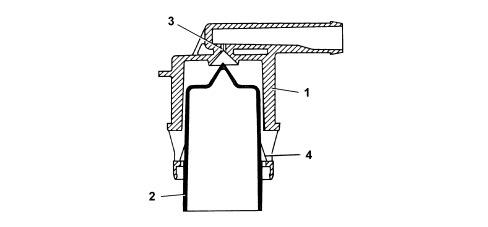
Seal in the case of roll over
If the vehicle rolls over, with the tank filled to any level, float (2) acts under its own weight and the weight of the fuel on hole (3) to prevent a dangerous outflow of fuel to the active carbon filters and the consequent risk of the vehicle catching fire.
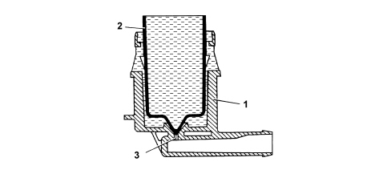
Active charcoal filter (canister)
This is fitted to the right rear wheel arch and consists of an activated charcoal filter element that absorbs fuel vapours coming from the tank.
A one-way valve allows outside air (flushing air) to come in and flow over the charcoal granules to carry away the fuel vapours and convey them through the outlet (1) to the intake manifold when fuel vapour solenoid is open.
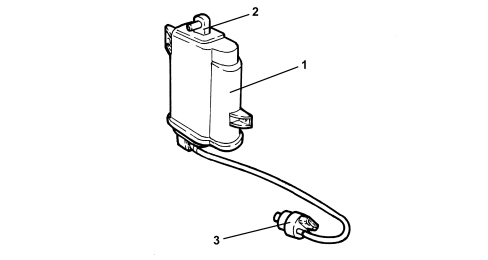
1. Activated charcoal filter
2. One-way flushing valve.
3. Fuel vapour solenoid valve
Fuel vapour solenoid valve
Specifications
It is fitted directly on the intake chamber and is operated by the injection control unit.
The solenoid allows fuel vapours stored in the canister to flow through to the engine intake.
If the power is off, the solenoid is closed and prevents fuel vapours from enriching the mixture excessively.
Operation
The solenoid valve is operated by the control unit according to a strategy.
When the electromagnet (3) is energized, it attracts valve core (1) which overcomes the loading of the spring (2) to bring the active charcoal filter into contact with the air intake manifold.
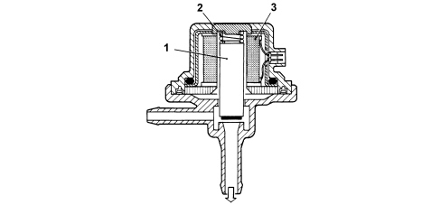
Safety and ventilation valve
Operation
This valve is built into the fuel filler cap and performs as follows, depending on fuel pressure in the tank:
- discharging the excessive pressure that is created inside the tank outwards (safety function);
- it allows the flow of outside air into the tank when, as a result of the fuel consumption, an excessive vacuum is created in the tank (ventilation function).